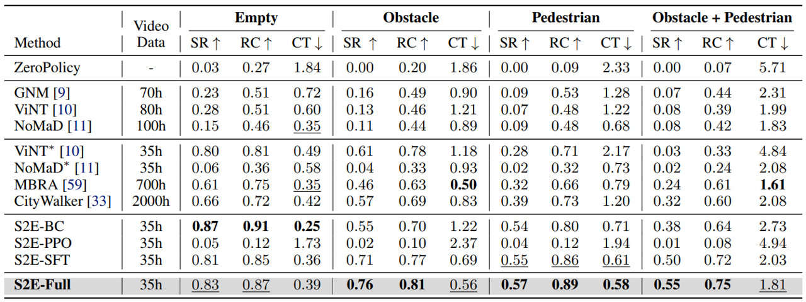

From Seeing to Experiencing: Scaling Navigation Foundation Models with Reinforcement Learning
Honglin He* , Yukai Ma* , Wayne Wu , Bolei Zhou
University of California, Los Angeles
TL;DR
-
S2E is a unified learning framework that scales navigation foundation models from passive offline video to interactive decision-making through reinforcement learning.
1. 📦 Provides a general framework for learning navigation from both offline data and online interaction.
2. 🔌 Introduces a plug-and-play Residual-Attention Module for efficient adaptation and scaling in RL.
3. 🧠Releases NavBench-GS, a realistic 3D Gaussian Splatting benchmark for evaluating navigation performance in closed-loop, interactive, and physically grounded environments.
S2E Model Architecture

S2E pipeline consists of two key components:
(1) Anchor-Guided Distribution Matching (AGDM): A framework that uses anchor-conditioned architecture to learn multi-modal trajectory distributions from offline real-world videos, improving model capability from the side of representation.
(2) Residual Attention Module (RAM): A lightweight residual design that fine-tunes pretrained attention blocks via reinforcement learning in simulation, enabling new behaviors (e.g., obstacle avoidance) while preserving general visual-motor priors.
Environments for Pretraining and Finetuning
Pretraining on Video Datasets
Finetuning on URBAN-SIM Simulator
NavBench-GS: Closed-Loop 3DGS Navigation Benchmark
We build NavBench-GS, a 3D Gaussian Splatting-based benchmark for evaluating navigation policies in closed-loop, visually reconstructed urban environments with simulated objects and pedestrians.
Real World Deployment
Scenarios with Static Obstacles
Scenarios with Dynamic Pedestrians
Long-Horizon Navigation
Comparison with SOTAs
Acknowledgement
We extend our gratitude for the excellent assets, including 3D objects from Objaverse-XL, 3D humans from SynBody, and robots from IsaacLab. Thank COCO Robot for donating virtual and physical robots.
Reference